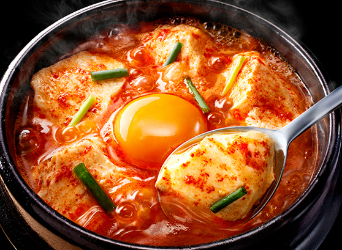

아직까지 단무지, 피클, 오이, 방울토마토를 먹지 않고, 심지어 김치도 쳐다보지 않는다. 해외생활을 하게되면서 김치를 먹지 않아도 아무도 신경쓰지 않았지만, 한국에 오니 사람들이 많이 놀라곤 한다.
"김치 못 먹는게 죄는 아니잖아!"
냉장고를 가득 채우는 쿰쿰한 김치냄새, 짜고 시큼한데 아삭한...
23년을 기피해왔던 이 녀석은 아직 적응하기 어렵다.
어쩌다 이 사실을 주위 사람들이 알게 되면 사람들은 물어본다.
‘왜 이 맛있는걸 먹지 못하니’, ‘넌 그럼 뭐 먹어?’
.
.
.
.
세상에 맛있는게 얼마나 많은데..!
그래서 소개한다.
이 편식러가 좋아하는 음식 3가지!😋
(지극히 개인 취향)
👇👇👇
FOOD 01
떡볶이
tteokbokki

그렇다. 한국의 또 다른 소울 푸드 ‘떡볶이’다.
흔히 학교 앞 떡볶이로 시작된 떡볶이와의 추억은 성인이 되서도 이어진다. 엽떡, 배떡, 응떡, 시장 떡볶이 등 종류가 많고 쉽게 접할 수 있다. 밥도 아니고 간식도 아닌게 언제나 먹어도 행복하다. 고구마 튀김을 곁들여 먹으면 그리 행복할 수가 없다. 고구마는 언제나 맛있어🍠
FOOD 02
돌솥 비빔밥
dolsot bibimbab
이름만 들어도 군침이 싹.. 비빔밥만큼 완벽한 음식이 있을까? 한 그릇안에 다양한 식감과 맛을 체험할 수 있다. 야채도 많고 단백질도 개인 취향에 따라 소, 돼지, 두부 등 다양하게 변경을 할 수 있다. 거기에 돌솥비빔밥을 먹는다면 비빔밥의 맛을 한층 더 업그레이드 시킬 수 있다.
지글지글...음식이 나올때부터 들려오는 소리는 청각을 자극한다.
치익치익...위에 올라간 계란이 밥을 비비며 익어가는 소리에 한 번 더 침을 삼킨다.
돌솥비빔밥의 절정은 돌솥 위에 눌러 붙은 누룽지다. 시간이 지나도 식지 않는 돌솥은 고소함과 바삭함을 더해 그 맛을 잊지 못하게 만든다.
FOOD 03
순두부찌개
sundubu-jjigae

최근에 빠져든 요리이다. 식단에 두부를 자주 넣고 가끔식 베지테리언 식당도 찾아가 볼 만큼 두부를 좋아한다.
작년 ‘맷돌로만’ 순두부 식당을 찾아간 이후로 순두부찌개를 찾게 되었다. 직접 식당에서 만든 순두부를 사용해 셀프 코너에도 순두부가 배치되어 있다. 순두부찌개를 기다리며 셀프코너에 있는 순두부를 애피타이져로 먹었다. 그러다 나온 순두부찌개 안에도 순두부가 가득했고 그때 먹은 매콤한 국물에 계란과 두부의 조합을 잊을 수 없다.
언제 또 가지..!